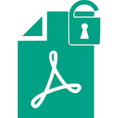
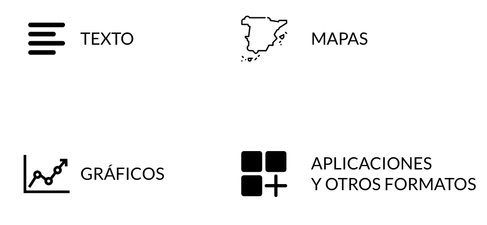

Periodismo de datos
Máster Periodismo 360º
RTVE Instituto - Universidad de Sevilla
Jaime Gutiérrez @jaimegutierrezh
¡Hola!
Jaime Gutiérrez
Soy periodista de datos en la web de RTVE
Me dedico a crear nuevas narrativas para contar historias
Datos, gráficos, mapas, visualizaciones, ilustraciones…
jaime.gutierrez@rtve.es
Antes de empezar
¿Qué vamos a ver?
Introducción al periodismo de datos
Presentación periodística de datos, hechos y cifras
Narrativas visuales
Herramientas del periodista de datos
Introducción al periodismo de datos
¿Qué es el periodismo de datos?
¿Qué es y de dónde viene el periodismo de datos?
- Periodismo de datos
-
“Un proceso periodístico basado en analizar y filtrar grandes bases de datos con el propósito de crear una nueva historia”.
Wikipedia
Mapa del cólera de J. Snow
La investigación del epidemiólogo John Snow de los casos de cólera durante el brote de 1854 en Londres es uno de los ejemplos más famosos de razonamiento inductivo.
Mapa del cólera de J. Snow
Al colocar sobre un mapa las muertes en el vecindario del brote, Snow detectó una concentración más alta alrededor del surtidor de agua de Broad Street.
- Su conclusión fue que el agua contaminada era la causa de la epidemia y no la transmisión por el aire, como se creía hasta entonces.
Diagrama de F. Nightingale
| ▇ Muertes evitables | ▇ Muertes por herida | ▇ Otras causas |

En 1855, la enfermera británica Florence Nightingale demostró la magnitud del desastre en la sanidad del ejército durante la Guerra de Crimea colocando las muertes por cada 1.000 soldados en un gráfico.
Escuelas de Manchester

Datos + periodismo
- Los datos ayudan al periodista a contar una historia convincente, que deje poco margen para rebatirla.
- Los datos ayudan al periodista a explicar cómo se relaciona una historia con un individuo.
Radiografía de la sanidad
RTVE, febrero 2023

¿Qué son datos?
El lenguaje de datos consiste en recopilar pequeños puntos de información, que a menudo son irrelevantes como instancia individual, pero enormemente importantes cuando se los ve desde el ángulo correcto.


Periodismo de datos vs. periodismo con datos
- El periodismo de datos requiere que, además de aportar unos datos, el periodista tenga la capacidad de analizar los datos y dialogar técnicamente con ellos.
- El periodismo de datos es la búsqueda sistematizada de una verdad verificable.
- Periodismo de datos no es solo periodismo con datos

¿Por qué hacer periodismo de datos?
¿Por qué hacer periodismo de datos?
“Cuando la información era escasa, la mayor parte de nuestros esfuerzos estaban dedicados a buscarla y recogerla. Ahora que hay información abundante, el procesamiento es más importante”.
Philip Meyer, periodista y profesor titular de la cátedra Knight de Periodismo en la Universidad de Carolina del Norte
¿Para qué sirve el periodismo de datos?
Filtrar el flujo de datos
Enriquecer los artículos
Ayudar a entender cuestiones complejas
Encontrar nuevos enfoques e historias únicas más allá de las agencias
Identificar tendencias y monitorizarlas
Dar acceso a datos en los que hay un interés público
Promover interpretaciones independientes de la información oficial
Hacer rendir cuentas al poder
¿Quién hace periodismo de datos?
Algunos ejemplos de narrativas con datos

¿Cómo hacer periodismo de datos?
Obtener los datos
Limpieza
Análisis
Enfoque
Verificación
Comunicación
El periodismo de datos es un proceso
Obtener los datos
Limpieza
Análisis
Enfoque
Verificación
Comunicación
Obtener los datos
Limpieza
Análisis
Enfoque
Verificación
Comunicación
¿Dónde hay datos?
| INE | Eurostat |
| CIS | OCDE |
| BOE | OMS |
| Banco de España | Banco Mundial |
| Tribunal de Cuentas | ONU |
- Literatura científica (Google Scholar)
- Estudios de diversas organizaciones (CSIC)
Obtener los datos
Limpieza
Análisis
Enfoque
Verificación
Comunicación
¿Dónde hay datos?
Obtener los datos
Limpieza
Análisis
Enfoque
Verificación
Comunicación
¿De dónde los sacamos?


Obtener los datos
Limpieza
Análisis
Enfoque
Verificación
Comunicación
El formato importa
Obtener los datos
Limpieza
Análisis
Enfoque
Verificación
Comunicación

Obtener los datos
Limpieza
Análisis
Enfoque
Verificación
Comunicación
Tener los datos no significa que estén listo para ser utilizados.
Obtener los datos
Limpieza
Análisis
Enfoque
Verificación
Comunicación
 |
 |
Obtener los datos
Limpieza
Análisis
Enfoque
Verificación
Comunicación
Obtener los datos
Limpieza
Análisis
Enfoque
Verificación
Comunicación
Los datos son una fuente: hay que entrevistarlos.
Invertir tiempo en pensar.
Entender los datos, profundizar, calcular, cruzar con otros datos…
Obtener los datos
Limpieza
Análisis
Enfoque
Verificación
Comunicación
Obtener los datos
Limpieza
Análisis
Enfoque
Verificación
Comunicación
Los datos tienen que confrontarse y completarse con otras fuentes: más datos, testigos, expertos…
Obtener los datos
Limpieza
Análisis
Enfoque
Verificación
Comunicación
Obtener los datos
Limpieza
Análisis
Enfoque
Verificación
Comunicación
Como a cualquier fuente, hay que contrastar y completar los datos con otras fuentes: testigos, expertos…
Obtener los datos
Limpieza
Análisis
Enfoque
Verificación
Comunicación

Obtener los datos
Limpieza
Análisis
Enfoque
Verificación
Comunicación
Buscar la mejor forma de contar lo que queremos 
El proceso parece estricto, pero es iterativo (y no necesariamente lineal) 

El periodismo de datos en la narrativa visual
¿Qué es la narrativa visual?
- Las narrativas visuales o visual storytelling son un proceso de comunicación a través de medios visuales.
- Son una herramienta potente para informar, explicar y ayudar a entender asuntos complejos.
- Suelen producir un impacto memorable en la audiencia y generan interés y valor añadido.
- Entre los elementos de una narrativa visual puede haber ilustraciones, gráficos, mapas, vídeos, texto, audios…
Ejemplos
Tratamiento de datos (I)
Operaciones básicas del periodismo de datos
- Media, mediana y moda
- Media ponderada y media móvil
- Variación porcentual
Media, mediana y moda (I)
Media. Suma de un conjunto de valores dividida entre el número total de sumandos
Mediana. Valor de la variable de posición central en un conjunto de datos ordenados
Moda. Valor que aparece con mayor frecuencia en un conjunto de datos
Media, mediana y moda (II)

Media. Suma de un conjunto de valores dividida entre el número total de sumandos
Mediana. Valor de la variable de posición central en un conjunto de datos ordenados
Moda. Valor que aparece con mayor frecuencia en un conjunto de datos
Media \[\frac{1+2+3+3+4+7+7+7+11}{9} = 5\]
Conoce tus datos para usar la media
Las medias nos ayudan a resumir los datos, pero pueden esconder la realidad.
Necesitas entender la distribución, extensión y variabilidad de los datos.
Decide si usas una media anual, mensual o diaria.
Media vs. media ponderada (I)
Media ponderada. Es apropiada cuando, en un conjunto de datos, cada uno de ellos tiene una importancia relativa (o peso) respecto de los demás
Se obtiene multiplicando cada uno de los datos por su ponderación (peso) para luego sumarlos; después se divide esta entre la suma de los pesos
| Precio por acción ($) | Nº acciones | Precio * Peso |
|---|---|---|
| 22 | 700 | 15.400 |
| 19 | 1.000 | 19.000 |
| 15 | 200 | 3.000 |
| 18 | 400 | 7.200 |
| 16 | 300 | 4.800 |
| 90 | 2.600 | 49.000 |
Media vs. media ponderada (II)
Media simple \[\frac{\sum \text{precios}}{\text{nº elementos}}\]
Media ponderada \[\frac{\sum (\text{precios} \times \text{peso})}{\sum \text{pesos}}\]
Media simple \[\frac{90}{5} = 18 \text{ dólares}\]
Media ponderada \[\frac{49.400}{2.600} = 19 \text{ dólares}\]
| Precio por acción ($) | Nº acciones | Precio * Peso |
|---|---|---|
| 22 | 700 | 15.400 |
| 19 | 1.000 | 19.000 |
| 15 | 200 | 3.000 |
| 18 | 400 | 7.200 |
| 16 | 300 | 4.800 |
| 90 | 2.600 | 49.000 |
Media vs. media ponderada (III)
Note
Aunque no cambie el precio de las acciones, una modificación en los pesos influye en la media
Media simple \[\frac{90}{5} = 18 \text{ dólares}\]
Media ponderada \[\frac{49.400}{2.600} = 19 \text{ dólares}\]
| Precio por acción ($) | Nº acciones | Precio * Peso |
|---|---|---|
| 22 | 700 | 15.400 |
| 19 | 1.000 | 19.000 |
| 15 | 200 | 3.000 |
| 18 | 400 | 7.200 |
| 16 | 300 | 4.800 |
| 90 | 2.600 | 49.000 |
Media simple \[\frac{\sum \text{precios}}{\text{nº elementos}}\]
Media ponderada \[\frac{\sum (\text{precios} \times \text{peso})}{\sum \text{pesos}}\]
Media móvil
Media móvil de cuatro días para ilustrar la tendencia subyacente
| Datos originales | Fórmula | Media Móvil |
|---|---|---|
| 1 | ||
| 4 | ||
| 2 | ||
| 8 | (1+4+2+8)/4 | 3,75 |
| 3 | (4+2+8+3)/4 | 4,25 |
| 12 | (2+8+3+12)/4 | 6,25 |
| 4 | (8+3+12+4)/4 | 6,75 |
| 16 | (3+12+4+16)/4 | 8,75 |
| 5 | (12+4+16+5)/4 | 9,25 |
| 16 | (4+16+5+16)/4 | 10,25 |
| 9 | (16+5+16+9)/4 | 11,50 |
Variación porcentual
El cambio en los valores se puede expresar como un porcentaje a partir del dato original
Cuando el nuevo valor es más pequeño que el antiguo, el resultado es negativo
\[\text{% Variación} = \left( \frac{\text{nuevo} - \text{antiguo}}{\text{antiguo}} \right) \times 100\]
Valores absolutos vs. cambios porcentuales
La representación de valores absolutos o de su cambio porcentual desde el dato de origen dibuja una curva de forma idéntica pero que atraviesa la línea de base
Expresar porcentajes
Porcentaje ≠ Puntos porcentuales ≠ Puntos básicos
Distintas formas de expresar un cambio en los valores:
Un incremento de 2 a 6 se puede expresar como…
… que el valor se triplica
… que el valor crece un 200%
La diferencia entre dos porcentajes se expresa como puntos porcentuales
Si un dato pasa del 2% al 1,75%…
…decrece 0,25 puntos porcentuales
También se puede expresar en puntos básicos
1 punto porcentual = 100 puntos básicos
Si un dato pasa del 2% al 1,75%…
…decrece 25 puntos básicos
No hagas medias con porcentajes
Los porcentajes no se pueden tratar como números normales. Para hacer un promedio hay que volver a los datos originales.
¡Cuidado!
\[\text{Media de } A\% \text{ y } B\% \neq \frac{A + B}{2}\]
| \[A\% = \frac{c}{e}\] | \[B\% = \frac{d}{f}\] |
\[\text{Nuevo porcentaje} = \left( \frac{c + d}{e + f} \right) \times 100\]
Continuará…
Ver Presentación periodística de datos, hechos y cifras